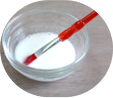
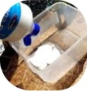
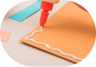
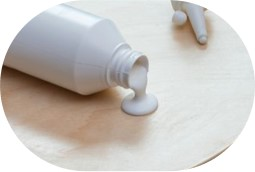

רוצים להכיר את הדבק הפלסטי?
לחצו על השאלות מצד ימין כדי לחשוף את התשובות!
איך מדביקים עם זה?
מורחים את הדבק על המשטח אותו רוצים להדביק, מניחים עליו את מה שרוצים להדביק, ומחכים עד שהדבק מתייבש ומתקשה. אפשר להשתמש בכלי למריחת הדבק – זה יכול להיות מקל ארטיק, מכחול פשוט (שלא אכפת לנו להרוס), או אפילו האצבעות שלנו.
חשוב לוודא שהמשטח נקי ויבש לפני ההדבקה, כלומר שאין עליו אבק או רטיבות.

הדבק הפלסטי הוא דבק נוזלי, ולכן חשוב לדעת שהוא עלול להרטיב את החומרים שמשתמשים בהם, כמו למשל להפוך נייר לרטוב וליצור בו גלים. אם לא רוצים שהדבק ירטיב את החומר, כדאי להשתמש בדבקים אחרים כמו דבק גומי, דבק סיליקון, או סרט דבק דו צדדי.
מה זה דבק פלסטי?
הדבק הפלסטי הוא דבק שנפוץ ביותר בגני ילדים, כי הוא מתנקה בקלות ואינו רעיל.
הוא יכול להיות לבן או שקוף, והוא יכול לשמש למגוון רחב של חומרים, וגם לתפקד במקרים מסוימים כלכה לציפוי מגן על דברים, כי הוא הופך לשקוף כשהוא מתייבש (גם אם היה לבן במקור).

זמן הייבוש שלו ארוך יחסית (לפחות כמה דקות), ומתארך ככל שמשתמשים בכמות דבק יותר גדולה. אבל, חיסרון זה דווקא יכול להיות יתרון עבור מי שרוצה מספיק זמן למקם את האובייקטים שהוא מדביק, לפני שהדבק מתייבש ומתקשה.
מה זה מדביק?
הדבק הפלסטי הוא מאוד ורסטילי, ומתאים למגוון רחב של חומרים, ביניהם:
עץ, בד, קלקר, אבן, עור, חומרים אורגניים, נייר, ופלסטיק.

הוא נצמד הכי טוב לחומרים שהם סופגים, וחומרים שפני השטח שלהם מחוספסים. כשמדובר בחומרים שאינם סופגים או שהם בעלי משטח חלק – יכול להיות שלדבק יהיה קשה להיתפס אליהם.
הדבק הפלסטי נחשב לדבק חלש יחסית, ולכן במקרים שבהם צריכים דבק חזק שיחזיק משקל של משהו, עדיף להשתמש בדבקים סמיכים וחזקים יותר כמו דבק סיליקון או דבק חם.
איך הדבק הפלסטי מדביק ומחזיק?
הדבק הפלסטי מתחיל נוזלי, ועם הזמן מתייבש ומתקשה.
לאחר שהדבק הפלסטי מתקשה ונספג בתוך החומר, לא ניתן להסיר אותו מהמשטח.
לעומת זאת, אם הדבק הודבק על משטח שאינו סופג, ניתן לקלף אותו מהמשטח, וכמובן גם מהידיים.

אם רוצים לנקות דבק פלסטי רטוב, ניתן להשתמש במים ובסבון לפי הצורך.
דבק פלסטי שהתייבש, ניתן לנסות להשרות במיים חמימים כדי לנסות להסיר אותו.